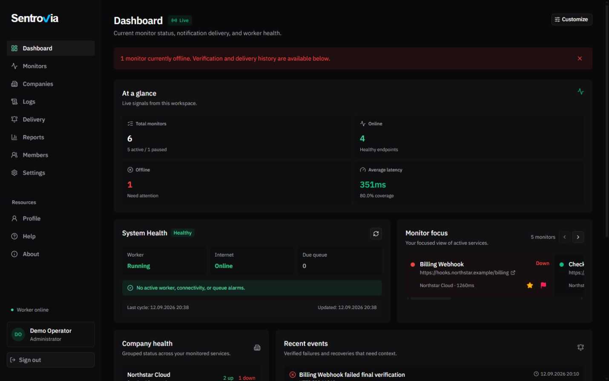

Verify failures before they become alerts.
Monitor services, keep outage evidence, and audit every notification from infrastructure you control.
HTTP · API · TCP · Ping · PostgreSQL · Heartbeats

Monitor services, keep outage evidence, and audit every notification from infrastructure you control.
HTTP · API · TCP · Ping · PostgreSQL · Heartbeats
